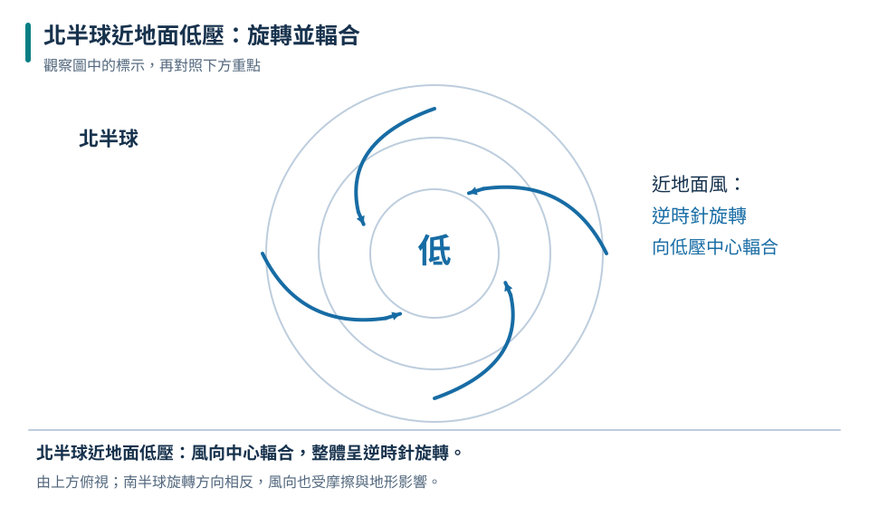
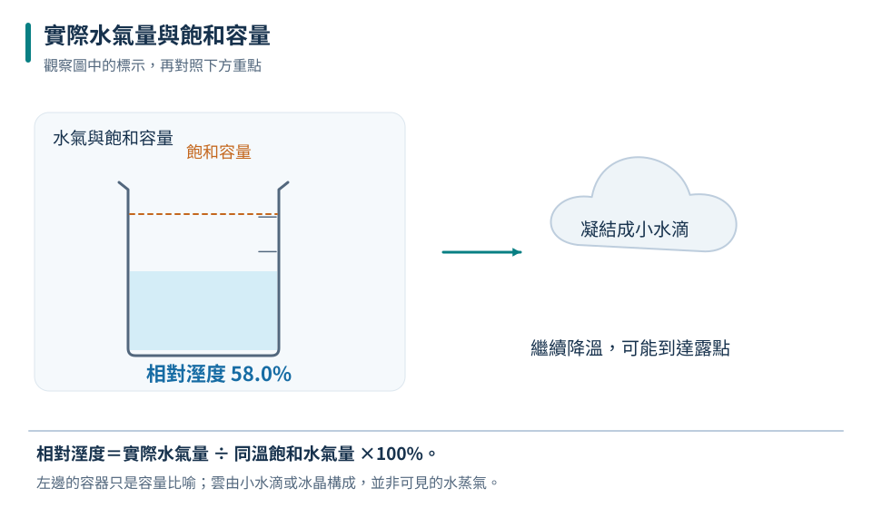
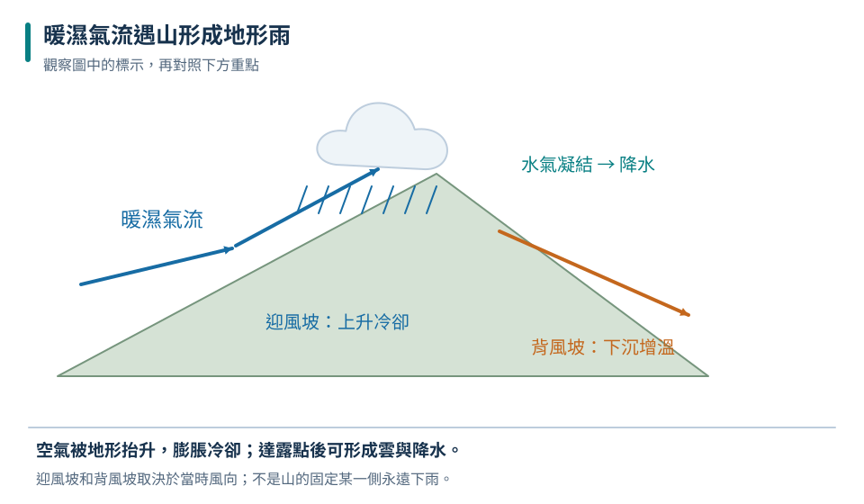

比較氣壓要同基準
天氣圖常用海平面氣壓，避免直接把高山的低站壓誤判成天氣低壓。
九下 · 地科 · 第 3 章
「今天濕度很高」不等於空氣中的水一定比昨天多，「低壓來了」也不保證每一地點都下雨。這章把氣溫、氣壓、風與水的變化串起來，學習讀氣象資料、比較對照條件，再用臺灣的季風、鋒面與颱風情境，練習做有證據且保留條件的判斷。
先備概念：熱脹冷縮與密度、蒸發、凝結和水循環、百分率與簡單折線圖
LEARN & EXPLAIN
乾燥空氣按體積約有 78% 氮、21% 氧，另有氬、二氧化碳等；水氣含量隨地點與天氣而變。對流層最靠近地表，包含大部分水氣與日常雲雨，其氣溫通常隨高度上升而降低；平流層上部因臭氧吸收紫外線，溫度趨勢與對流層不同。不能把「越高越冷」當成整個大氣所有高度都成立。
氣壓是空氣作用在單位面積上的力，通常越高處因上方空氣較少而較低。水平氣壓差會驅動空氣流動，但地球自轉與摩擦使地面風不一定直線由高壓中心吹向低壓中心。北半球近地面低壓周圍常呈逆時針向內，高壓常順時針向外；南半球旋轉方向相反。風向以風吹來的方向命名。
天氣圖常用海平面氣壓，避免直接把高山的低站壓誤判成天氣低壓。
同一地圖尺度與壓差間距下，等壓線越密通常表示氣壓梯度較大、風較強。
晴朗弱背景風時，白天陸地升溫較快，近地面常海風；夜晚可能反為陸風。

箭頭兼具逆時針旋轉與向內移動；真實地面風還受地形、摩擦和系統移動影響。
甲較可能風強；不是只看所在地氣壓數值高低。
低壓不代表任何地點任何時候都下雨；還須有足夠水氣、抬升與合適的雲雨條件。
LEARN & EXPLAIN
水蒸氣是看不見的氣態水；白霧與雲主要是懸浮的微小水滴或冰晶。某溫度下空氣能維持的飽和水氣量有一定範圍，溫度越高，飽和水氣量通常越大。相對濕度可用「實際水氣量÷同溫飽和水氣量×100%」理解。即使沒有增加水氣，降溫也可能使相對濕度升高。
空氣冷卻到達飽和時的溫度稱露點；繼續冷卻時，部分水氣可能凝結。空氣上升因周圍氣壓降低而膨脹冷卻，若到飽和，便能在凝結核上形成雲滴。雲滴很小，還須成長到足以有效落下才形成雨。露是在冷表面凝結，霧是在近地面空氣中懸浮的小水滴；兩者都不是看得見的水蒸氣。
暖空氣 50% 與冷空氣 80% 的實際水氣量，不能只比較百分數大小。
地形、強烈地表加熱與鋒面都可能讓空氣上升冷卻。
冰晶成長可形成雪；雲中強上升氣流等條件可使冰粒反覆成長成冰雹。
| 溫度 | 同體積飽和水氣量 |
|---|---|
| 10°C | 9 g |
| 20°C | 17 g |
| 30°C | 30 g |

供本節固定體積模型計算的取整值；不可當作精密氣象常數。
降溫而未增添水氣，相對濕度仍由 50% 升至約 88%。
雲不是氣態水本身；氣態水看不見，白色外觀來自微小水滴或冰晶散射光。
LEARN & EXPLAIN
不同性質氣團相遇的過渡帶稱鋒面。冷鋒常是冷空氣推進並抬升暖空氣，可能帶來雲雨、風向改變和降溫；滯留鋒移動較慢，若有充足暖濕空氣供應，可出現持續或反覆降雨。臺灣梅雨常在春末夏初季風轉換期間出現，但不是每年起迄日期、雨量和影響區域都相同。
臺灣冬季常受東北季風影響，北部與東北部迎風地區較易降雨；夏季西南季風或西南氣流可為中南部帶來水氣，午後受熱也容易發展對流。颱風是發展於暖海洋上的熱帶氣旋，北半球近地面呈逆時針向內旋轉。颱風眼可能較平靜，但眼牆附近風雨強；颱風移動後風雨可再來，不能把短暫平靜當成警報解除。
水氣遇山抬升可使迎風側多雨，山脈另一側條件不同。
氣象圖、雷達、衛星與地面觀測互補，預報會隨新資料更新。
外圍環流、地形與引入的西南氣流也能造成遠離中心處強降雨。

水氣供應與抬升強度都重要；同一山坡在不同風向下可能轉換迎風、背風角色。
風向、水氣與地形共同形成降雨差異，並不是全臺冬天必定都乾燥。
颱風登陸後通常失去暖海能量來源並受地形摩擦影響，但不代表雨勢立即停止或災害消失。
TRY, OBSERVE, EXPLAIN
REVIEW
天氣圖常用海平面氣壓，避免直接把高山的低站壓誤判成天氣低壓。
回到這一節複習暖空氣 50% 與冷空氣 80% 的實際水氣量，不能只比較百分數大小。
回到這一節複習水氣遇山抬升可使迎風側多雨，山脈另一側條件不同。
回到這一節複習CHAPTER TEST
先獨立作答，再看解析。中難與難為編者估計，尚未經學生實測校準。